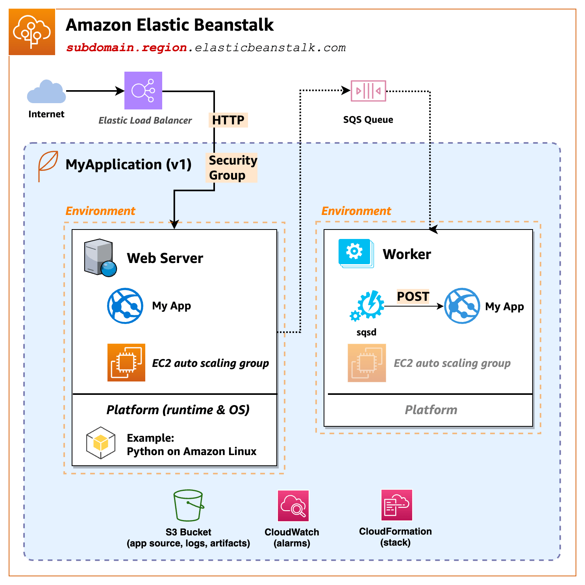

Elastic Beanstalk:
how does a http request from the Internect get response?Route53Elastic Load Balancer,
ELB then forwards the request to EC2sHTTPS - Elastic Load Balancer decrypts
incoming HTTPS (SSL/TLS) traffic then forward plain HTTP to EC2
services.
High Availably of EC2 - managed by
AWS Auto Scaling Group with HealthCheck
https://docs.aws.amazon.com/elasticbeanstalk/latest/dg/GettingStarted.html
Platform A platform is a combination of an operating system, programming language runtime, web server, application server, and additional Elastic Beanstalk components. Elastic Beanstalk provides manged platforms, or you can provide your own platform in a container. Elastic Beanstalk supports platforms for different programming languages, application servers, and Docker containers. When you create an environment, you must choose the platform. You can upgrade the platform, but you cannot change the platform for an environment.
Platform used: Docker running on 64bit Amazon Linux 2/4.0.5
To configure service access Next, you need two roles. A service role allows Elastic Beanstalk to monitor your EC2 instances and upgrade you environment’s platform. An EC2 instance profile role permits tasks such as writing logs and interacting with other services.